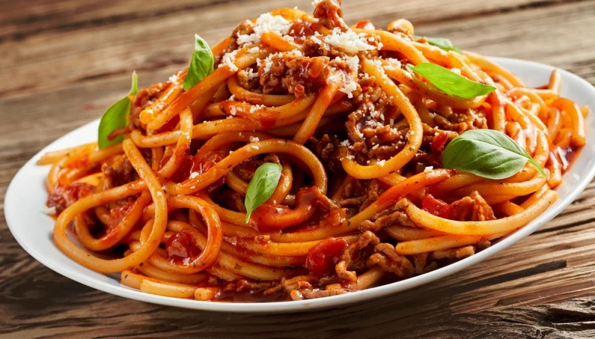

HOW TO PREPARE SPAGHETTI
INGREDIENTS
- Spaghetti
- Water
- Salt
- Onion
- Garlic
- Tomato paste
- Ground meat
- Oil
- Spices and herbs
- Basil

DURATION: 30 MINUTES
RECIPE
- Fill a large pot with 4 to 5 litters of water
- Bring the water to a rapide boil over high heat
- Add 1 to 2 tablespoons of salt to the boiling water. This add flavor to the paste
- Drop the spaghetti into the water and stir it gently so the strand do not stick together
- boil for 8 to 10 minutes
- Pour the spaghetti into a strainer in te sink to remove the water
- pour 30ml of olive oil into a deep pan over medium heat
- Add finely chopped onions , garlic
- Stir the mixture for about 5 minutes until the onions turns translucent
- Add grounded meat into the pan
- Stir in salt and herbs . Mix in one tablespoon pf concentrated tomato paste
- Stir in constantly for 2 minutes to caramelize the paste and deepen the flavor
- Transfer your cooked drained spaghetti straight into the sauce pan
- Toss the pasta over low heat for 1 minute so it absorbs the flavors
- Plate the spaghetti and finish by adding fresh basil to it